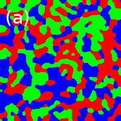
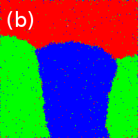
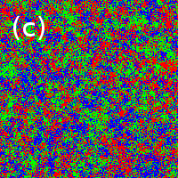
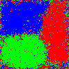
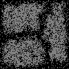
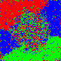
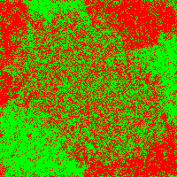
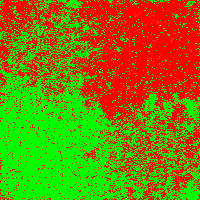

2024-08-12
Building on T.C. Schelling’s 1971 model of “individually motivated" racial segregation, we explore the conditions under which segregated domains coexist with integrated domains in the same system. We employ a simple agent-based model on a 2D lattice where each agent has some preference to be near other agents of like type, but which allows for random movements as well. In attempting to produce the desired results, we consider two variants: systems in which the randomness of movement varies from agent-to-agent, and systems in which an external potential is imposed on the lattice. While the first variant does not lead to the desired behavior, the second does, and we explore the effects of several several different potentials on the long-time segregation of the system.
In 1971, T.C. Shelling introduced several dynamic models of racial
segregation, showing how even the slightest preference of individuals to
be near other individuals of like type could produce large-scale
segregation, even in the absence of economic, legal or other global
concerns. In each model, individuals of different “racial" would be
placed on a lattice, and each individual would be classified as “happy"
or “unhappy" based on the “racial" makeup of those around them (e.g.
“happy" if 50% or more of its neighbors were of like-type). If an
individual were “unhappy," it would move to a different site on the
lattice. Schelling’s result was that, even if each individual had very
little racial preference, segregated domains would form on the
lattice. Decades
later, physicists discovering the paper recognized its similarity to an
Ising system and consequently suggested improvements. Noting that
Schelling’s original model created segregation only on a local level and
did not lead to the formation of large-scale segregated domains (a
disparity that was first noticed and remedied by Jones in 1985), Stauffer & Solomon
devised an equivalent Ising-like system,
reproducing Schelling’s original results. By “increasing the
temperature" (that is, increasing the probability of non-ideal moves),
large domains were produced. Of course, if temperature were increased
beyond some critical temperature
, the result would be complete
integration. Stauffer & Solomon
interpreted this temperature as a measure of racial tolerance, and while
this might make sense in explaining the phase transition between
segregation and integration, this interpretation doesn’t really make
sense in explaining the behavior at
. Superficial similarities
have also been noted between urban segregation and metal mixtures in
binary alloys.
Up until this point, however, no attempts have been made to explain the phenomenon of integration and segregation existing side-by-side. Consider Fig. 1, a map of the distribution of ethnicities in Montgomery County, MD, specifically, Downtown Silver Spring and the surrounding areas. While there is a sharp ethnic divide on the East-West line to the south of Downtown Silver Spring, Downtown Silver Spring itself is heavily integrated. While it is, of course, entirely conceivable that the reason for this phenomenon could be economic (due to, say, differing property costs) or historical, this paper seeks to explore, in the words of Schelling, “individually motivated" reasons for this phenomenon, that is, a model to account for this phenomenon that can be accounted for exclusively by the decision-making processes of individuals.

Our starting point for these investigations is based on the basic
Schelling model at positive , as outlined by Stauffer &
Solomon.
First, we create a 2D (
) lattice and
completely fill it with agents of random race. We chose to consider the
case of three races (red, green and blue) at equal proportions. Then, we
delete exactly one site to create a vacancy. An agent
of race
is then chosen at random. We proceed
to compute its “energy" both at its current site and at the vacancy:
that is, by considering the interactions with
all agents within some distance
of the site
.
While the matrix representing
these interactions could be random, we chose to begin by exploring the
simplest case:
That
is, agents of like race are “attracted" while agents of differing races
are “repelled."
The individual will then move to the new site if the
energy difference
between the
vacancy and its current site is less than zero or otherwise with a
probability
where
describes a “temperature" of the system
(see Section 2.1 for an interpretation of this
value).
If the agent moves, it will proceed to occupy the vacancy, and its old location will become a new vacancy. If the agent does not move, another agent is selected at random. This simulates the perfect “seller’s market"–only one vacancy is ever available to be moved into at any given time, each agent has only two choices (move to that vacancy or stay where it is), and the only way for the system to advance is for someone to move to the vacancy.
To correct for certain artifacts in this method, each time a new
agent needs to be selected, there is a probability that we fill the
vacancy with a new, random individual (an “out-of-towner"). In that
case, another agent is selected at random to “move out of town" and
create a new vacancy.
  
As shown in Fig. 2, at (and
), Schelling’s
original results are reproduced. At
,
large-scale segregated domains form, while above
, integration dominates, agreeing with
the findings of Stauffer & Solomon.
Stauffer & Solomon and others interpreted the temperature as a measure of the “tolerance" of
individuals in the system, but let’s consider what changing
actually does–as
increases, agents in the system are
more likely to move, even if it would lead them to be ethnically less
“content." If these were real people, we could interpret this as meaning
that these moves were performed for reasons besides ethnic similarity.
In the real world, very few individuals move to a new home based solely
on the ethnic makeup of their neighbors. In fact, according to the 2000
US Census, the number 2 reason for moving (behind “family reasons") was
due to a new job or transfer. If someone were moving to be closer to
work, they might be more likely to discount the ethnic similarity of
their neighbors. So perhaps that can be our interpretation of
– that societies (or individuals, as we
will explore in the next section) that are more career-oriented may be
modeled as having higher temperature.
To attempt to create a system containing both integrated and
segregated neighborhoods, we will begin by creating two classes of
agents, each composed of equal proportions of our three races, but with
class having a different temperature . So now each individual has not only a
race
but a temperature
. Besides that, we made no changes to
the model. Having set the temperature for one group well below
and that for the other above, the
result is shown in Fig. 3, and is not what we would have hoped
for. Rather than segregated neighborhoods coexisting with integrated
ones, what we see is segregated neighborhoods with low-
cores and high-
edges. This makes some intuitive sense,
as high-T individuals are more willing to move into the “less desirable"
locations on the borders between neighborhoods.
 
In trying to come up with alternate methods of creating coexisting
integrated and segregated neighborhoods, we considered our real-world
example: Downtown Silver Spring. What if the locale itself were
responsible for the integration? Specifically, what if the presence of
an attraction, something that individuals of all races wanted to be near
(be it a shopping center, a transportation hub, a job locus, or, as in
the case of DTSS, a combination of all of the above), was enough to
override the innate preference towards segregation? To investigate this,
our next round of simulations included the presence of an external
potential overlaid on the lattice of the following form: where
is the coordinate of the attraction.
The exponent of
was chosen based on the idea of
commuting: if someone needs to commute to point
, shaving
minutes off the commute is going to be
just as important if it means shortening the commute from
minutes to
as from
minutes to
. No cutoff distance was chosen for the
potential–the idea is that all agents on the lattice, no matter how far
out, need to commute to this attraction.
With this potential in mind, we make one small modification to our
model, replacing Eqn. [eqn:energy] with the following: where
is a weighting term that describes
just how important it is for the agent
to be near the attraction.

Fig. 4 shows the results of this modification. Even with all members of the population given the same weighting and the same temperature, we obtain the results we desired–around the attraction, we have dense integration, while away from it, we have large segregated domains.
This solution is interesting, as it doesn’t even come close to
minimizing the energy of the system (the solution for energy
minimization, by the way, is independent of the external potential,
since all agents have the same weighting term). This can be explained by
the fact that each agent is “greedy"–it doesn’t care about minimizing
the energy of the whole system, only about minimizing its own energy.
Consider an agent in the center of one of the outlying segregated
regions. For the sake of argument, say all of its neighbors are of the same
color. Now say it has the opportunity to move to a vacancy
sites closer to the attraction. Even
if none of the
sites in the neighborhood of this
vacancy are of the agent’s type, it will always move to this new site,
even though it increases the overall energy of the system.
Thus, any self-segregation that may occur near the attraction due to
moves of agents already near the attraction will be undone by the influx
of opportunistic agents moving near to the attraction from faraway.
We now consider the case of multiple attractions, which can be
handled in two ways. If each attractor is a necessity to all the agents
in the system (for example, if one attractor is a grocery store and the
other a shopping center), we can think of the potential of the system as
a superposition of the potentials due to each attraction:
On the other hand, if both attractions serve the same purpose (for
example, if both are train stations), then all an agent will care about
is which attraction is closer, in other words, the potential will be
determined by the minimum distance to one of the attractions:
In the case of two superimposed potentials, the ideal
location, potential-wise, will be anywhere along the line connecting the
two attractions. Indeed, the combined potential in this case will be
stadium-shaped, with a much larger area where the potential isn’t as
steep. Consequently, one might expect our model to segregate more
readily, but as Fig. 5 shows, this is not the case. Instead, the
entire “low-potential" region is integrated, while the boundaries are
segregated.

In the case of minimal-value potentials, we would absolutely expect a segregated solution, as each race could “lay claim" to its own attraction. Instead, as Fig. 6 shows, the result is the same as before–integration near the attractions, segregation far away, where the potential is higher.

In seeking to replicate the phenomenon of segregated and integrated domains coexisting in the same system, we have shown that such behavior may arise from a universal rule set, that is, it is not necessary for individuals in the system to have different decision-making processes; individuals living in integrated urban centers need not be more tolerant or cosmopolitan or career-oriented than their suburban segregated compatriots. Similarly, those choosing to live in the segregated suburbs need not be more bigoted than their integrated counterparts. Our results suggest that integration can spontaneously arise in systems just by creating destinations that appeal to all demographics. As each individual acts in their own best interests, the system as a whole diverges away from any lowest-energy (segregated) configuration.
Our model, of course, is overly simplistic–it does not take into account property costs, nor differences between individuals, be they economic or social. The “ultimate seller’s market" scheme we use may also contribute to our results, and may help explain why we do not see segregation re-emerge, even in multi-attraction systems. Further investigations would study the effect of multiple vacancies, where each agent would have a choice of where to move, beyond the choice of whether or not to move at all. We would also like to investigate more sophisticated energy matrices, that is, if the racial preferences are unequal (say, Red prefers not to be around Blues more than Blue prefers not to be around Reds, or Red prefers living near Greens than Blues).
We would also like to investigate phenomena such as repulsive
potentials (say, due to a garbage dump or a high-crime area, which would
probably be of a form other than ), potentials with hard
cut-offs, and regular or irregular potential lattices. It would also be
interesting to investigate real-world topologies (taking into account
uninhabitable zones such as rivers, parks or dense forests). For
example, the ethnic divide to the south of Downtown Silver Spring
happens to fall along Rock Creek Park. We would hope that our model
would reproduce such phenomena.
We allude at several points to the fact that the integrated solutions are non-ideal, energetically. It is important to point out that our simulations are all initialized to a random (integrated) configuration, far from these “ideal" configurations. Continued research would of course require some trials with the system initialized to one of these lowest-energy configurations to see whether integration arises even under those conditions, or whether the phenomena we have seen so far has merely been the suppression of the formation of segregated domains.
Finally, all the results we present here have been qualitative–we
differentiate between segregation and integration based on how the
system looks rather than by using any mathematical measure. For
example, the total energy of the system, as defined by
would no-doubt prove a useful measure, especially if we compared it to
the minimum such value possible (a large departure from the minimum
energy would be indicative of integration). This measure would serve as
an order parameter to allow us to study phase transitions in the system
with respect to the tuning parameters
and
, which were chosen in the above
simulations strictly for the purposes of clear demonstration. This would
allow for a far more rigorous treatment of the material than we have
performed so far. Furthermore, we believe it might be possible to
analytically derive some properties of the equilibrium conditions, for
example, in the single-attractor case, the radius of the integrated
neighborhood (we suspect, but have not yet attempted to verify, that
this condition is that the expectation value for the energy–both
potential and racial–of an agent at the edge must be equal to either the
energy of the most remote agent or the average energy of all outlying
agents). These types of analysis would not only strengthen our results,
but our methods might prove applicable to other related systems.